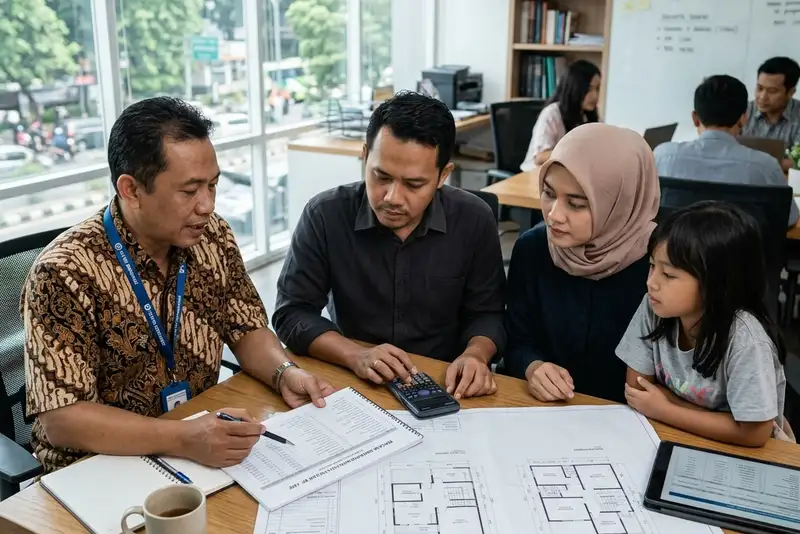

Daftar Isi
Cara menghitung RAB renovasi rumah 2 lantai yang akurat dilakukan dengan menentukan ruang lingkup pekerjaan, mengukur area terdampak, merinci komponen biaya per kategori, lalu menambahkan dana cadangan.
- RAB yang akurat dimulai dari ruang lingkup pekerjaan yang jelas, bukan estimasi kasar.
- Pengukuran area harus mencakup seluruh bagian yang terdampak pekerjaan, termasuk lantai dua.
- Komponen RAB idealnya dipisah menjadi struktur, arsitektur, mekanikal elektrikal, dan finishing.
- Dana cadangan sebaiknya dihitung sejak awal, bukan ditambahkan setelah anggaran habis.
- RAB tertulis membantu proses negosiasi dan pengawasan pekerjaan kontraktor.
Apa Itu RAB dalam Renovasi Rumah 2 Lantai?
RAB atau rincian anggaran biaya dalam renovasi rumah 2 lantai adalah dokumen yang memuat perhitungan detail seluruh biaya pekerjaan, mulai dari material, upah, hingga biaya tambahan yang mungkin timbul.
RAB berfungsi sebagai acuan utama selama proses renovasi berlangsung. Tanpa RAB yang jelas, pemilik rumah dan kontraktor tidak memiliki patokan yang sama mengenai cakupan pekerjaan dan besaran biaya yang disepakati. Hal ini sering menjadi sumber perselisihan di tengah proyek, terutama pada renovasi rumah bertingkat yang melibatkan banyak jenis pekerjaan sekaligus.
Bagaimana Langkah Menyusun RAB Renovasi Rumah 2 Lantai?
Langkah menyusun RAB renovasi rumah 2 lantai dimulai dari menentukan ruang lingkup pekerjaan, dilanjutkan dengan pengukuran area, perincian komponen biaya, dan penambahan dana cadangan.
Berikut tahapan yang umum digunakan dalam penyusunan RAB renovasi rumah bertingkat.
- Tentukan ruang lingkup pekerjaan secara spesifik, misalnya renovasi kamar mandi lantai dua, penambahan ruang, atau perbaikan atap.
- Lakukan pengukuran area yang akan dikerjakan, termasuk tinggi plafon dan luas dinding yang terdampak.
- Susun daftar kebutuhan material berdasarkan spesifikasi yang diinginkan, dari material standar hingga premium.
- Hitung estimasi upah tukang, baik dengan sistem harian maupun borongan, sesuai kesepakatan.
- Tambahkan biaya struktur tambahan apabila pekerjaan menyentuh kolom, balok, atau pondasi.
- Masukkan dana cadangan sekitar 10 hingga 15 persen dari total estimasi untuk mengantisipasi biaya tak terduga.
Penyusunan RAB idealnya melibatkan kontraktor atau tukang berpengalaman sejak tahap awal, karena mereka lebih memahami kondisi lapangan yang mungkin memengaruhi kebutuhan material dan upah.
Apa Saja Komponen yang Wajib Ada di RAB Renovasi Rumah 2 Lantai?
Komponen yang wajib ada di RAB renovasi rumah 2 lantai meliputi biaya material, upah tukang, biaya struktur, biaya mekanikal elektrikal, biaya finishing, serta dana cadangan.
Setiap komponen sebaiknya dirinci secara terpisah agar mudah dipantau. Biaya material mencakup bahan bangunan utama seperti semen, bata, besi, dan kayu. Upah tukang perlu dijabarkan berdasarkan jenis pekerjaan, misalnya tukang batu, tukang kayu, dan tukang listrik. Biaya struktur mencakup pekerjaan yang berkaitan dengan kekuatan bangunan, seperti perkuatan kolom atau balok pada lantai dua. Biaya mekanikal elektrikal meliputi instalasi listrik, pipa air, dan sanitasi yang sering terlewat dalam perhitungan awal pemilik rumah.
Biaya finishing mencakup pekerjaan akhir seperti pengecatan, pemasangan keramik, dan pemasangan kusen. Terakhir, dana cadangan wajib dimasukkan sebagai antisipasi terhadap kondisi lapangan yang tidak terduga, seperti kerusakan struktur lama yang baru terlihat setelah pekerjaan dimulai.
Berdasarkan praktik umum di industri konstruksi rumah tinggal, proyek renovasi yang menyusun RAB dengan komponen terpisah seperti ini cenderung lebih mudah dipantau progres biayanya dibanding RAB yang hanya berupa angka total (praktik umum industri konstruksi, periode 2025-2026).
Bagaimana Cara Memastikan RAB Renovasi Sudah Akurat?
Cara memastikan RAB renovasi sudah akurat adalah dengan membandingkan rincian harga material dan upah dengan kondisi pasar terkini, serta mengecek kesesuaian RAB dengan spesifikasi pekerjaan yang disepakati.
Beberapa cara praktis yang dapat dilakukan antara lain meminta penjelasan detail dari kontraktor mengenai asumsi harga yang digunakan dalam RAB, membandingkan penawaran dari lebih dari satu kontraktor dengan spesifikasi pekerjaan yang sama persis, serta memeriksa apakah RAB sudah mencakup seluruh tahapan pekerjaan mulai dari persiapan hingga pembersihan akhir.
Pemilik rumah juga disarankan untuk menanyakan riwayat proyek renovasi rumah bertingkat yang pernah dikerjakan kontraktor tersebut, sebagai bahan pertimbangan sebelum menyepakati RAB secara final.